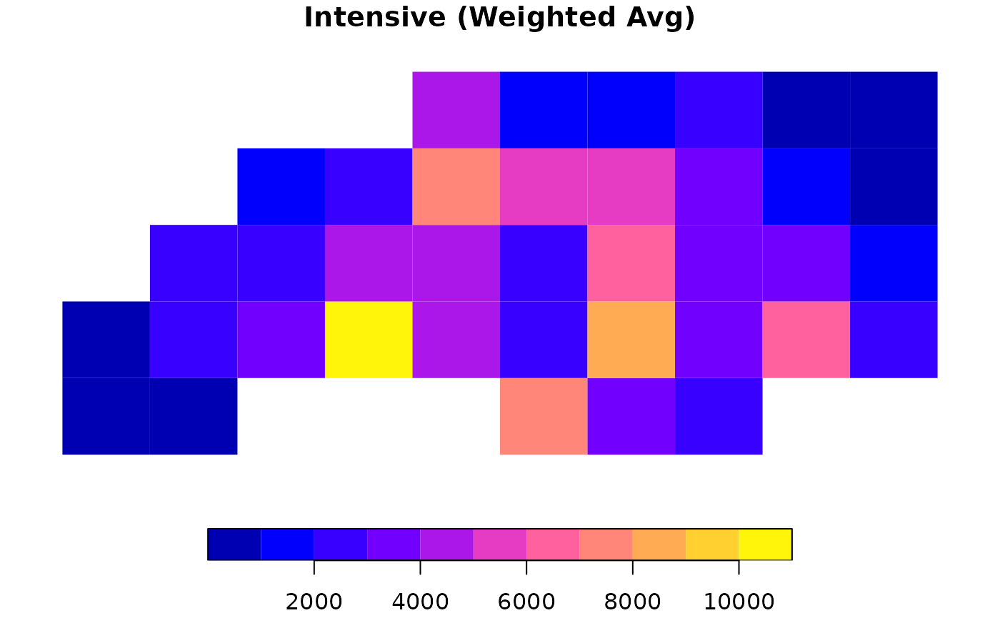
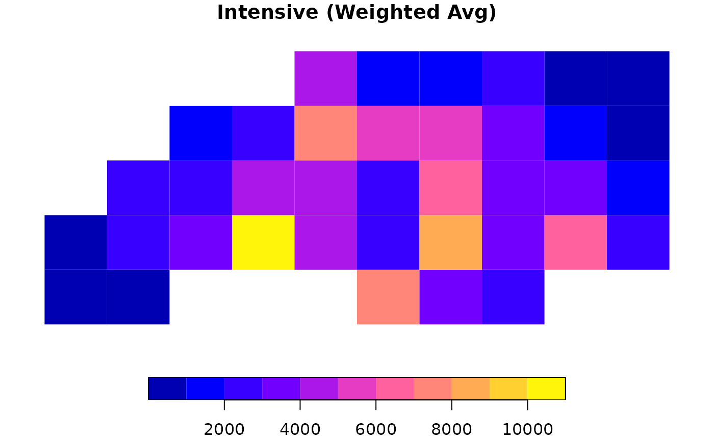

Transfers attribute data from a source spatial layer to a target spatial layer based on the area of overlap between their geometries. This function executes all spatial calculations within DuckDB, enabling efficient processing of large datasets without loading all geometries into R memory.
Usage
ddbs_interpolate_aw(
target,
source,
tid,
sid,
extensive = NULL,
intensive = NULL,
weight = "sum",
output = "sf",
keep_NA = TRUE,
na.rm = FALSE,
join_crs = NULL,
conn = NULL,
name = NULL,
crs = NULL,
crs_column = "crs_duckspatial",
overwrite = FALSE,
quiet = FALSE
)Arguments
- target
An
sfobject or the name of a persistent table in the DuckDB connection representing the destination geometries.- source
An
sfobject or the name of a persistent table in the DuckDB connection containing the data to be interpolated.- tid
Character. The name of the column in
targetthat uniquely identifies features.- sid
Character. The name of the column in
sourcethat uniquely identifies features.- extensive
Character vector. Names of columns in
sourceto be treated as spatially extensive (e.g., population counts).- intensive
Character vector. Names of columns in
sourceto be treated as spatially intensive (e.g., population density).- weight
Character. Determines the denominator calculation for extensive variables. Either
"sum"(default) or"total". See Mass Preservation in Details.- output
Character. One of
"sf"(default) or"tibble"."sf": The result includes the geometry column of the target."tibble": The result excludes the geometry column. This is significantly faster and consumes less storage.
Note: This argument also controls the schema of the created table if
nameis provided.- keep_NA
Logical. If
TRUE(default), returns all features from the target, even those that do not overlap with the source (values will be NA). IfFALSE, performs an inner join, dropping non-overlapping target features.- na.rm
Logical. If
TRUE, source features withNAvalues in the interpolated variables are completely removed from the calculation (area calculations will behave as if that polygon did not exist). Defaults toFALSE.- join_crs
Numeric or Character (optional). EPSG code or WKT for the CRS to use for area calculations. If provided, both
targetandsourceare transformed to this CRS within the database before interpolation.- conn
A connection object to a DuckDB database. If
NULL, the function runs on a temporary DuckDB database.- name
A character string of length one specifying the name of the table, or a character string of length two specifying the schema and table names. If
NULL(the default), the function returns the result as ansfobject- crs
The coordinates reference system of the data. Specify if the data doesn't have a
crs_column, and you know the CRS.- crs_column
a character string of length one specifying the column storing the CRS (created automatically by
ddbs_write_vector). Set toNULLif absent.- overwrite
Boolean. whether to overwrite the existing table if it exists. Defaults to
FALSE. This argument is ignored whennameisNULL.- quiet
A logical value. If
TRUE, suppresses any informational messages. Defaults toFALSE.
Value
If
nameisNULL(default): Returns ansfobject (ifoutput="sf") or atibble(ifoutput="tibble").If
nameis provided: ReturnsTRUEinvisibly and creates a persistent table in the DuckDB database.If
output="sf", the table includes the geometry column.If
output="tibble", the table excludes the geometry column (pure attributes).
Details
Areal-weighted interpolation is used when the source and target geometries are incongruent (they do not align). It relies on the assumption of uniform distribution: values in the source polygons are assumed to be spread evenly across the polygon's area.
Coordinate Systems:
Area calculations are highly sensitive to the Coordinate Reference System (CRS).
While the function can run on geographic coordinates (lon/lat), it is strongly recommended
to use a projected CRS (e.g., EPSG:3857, UTM, or Albers) to ensure accurate area measurements.
Use the join_crs argument to project data on-the-fly during the interpolation.
Extensive vs. Intensive Variables:
Extensive variables are counts or absolute amounts (e.g., total population, number of voters). When a source polygon is split, the value is divided proportionally to the area.
Intensive variables are ratios, rates, or densities (e.g., population density, cancer rates). When a source polygon is split, the value remains constant for each piece.
Mass Preservation (The weight argument):
For extensive variables, the choice of weight determines the denominator used in calculations:
"sum"(default): The denominator is the sum of all overlapping areas for that source feature. This preserves the "mass" of the variable relative to the target's coverage. If the target polygons do not completely cover a source polygon, some data is technically "lost" because it falls outside the target area. This matchesareal::aw_interpolate(weight="sum")."total": The denominator is the full geometric area of the source feature. This assumes the source value is distributed over the entire source polygon. If the target covers only 50% of the source, only 50% of the value is transferred. This is strictly mass-preserving relative to the source. This matchessf::st_interpolate_aw(extensive=TRUE).
Note: Intensive variables are always calculated using the "sum" logic (averaging
based on intersection areas) regardless of this parameter.
References
Prener, C. and Revord, C. (2019). areal: An R package for areal weighted interpolation. Journal of Open Source Software, 4(37), 1221. Available at: https://doi.org/10.21105/joss.01221
See also
areal::aw_interpolate() — reference implementation.
Examples
# \donttest{
library(sf)
# 1. Prepare Data
# Load NC counties (Source) and project to Albers (EPSG:5070)
nc <- st_read(system.file("shape/nc.shp", package = "sf"), quiet = TRUE)
nc <- st_transform(nc, 5070)
nc$sid <- seq_len(nrow(nc)) # Create Source ID
# Create a target grid
g <- st_make_grid(nc, n = c(10, 5))
g_sf <- st_as_sf(g)
g_sf$tid <- seq_len(nrow(g_sf)) # Create Target ID
# 2. Extensive Interpolation (Counts)
# Use weight = "total" for strict mass preservation (e.g., total births)
res_ext <- ddbs_interpolate_aw(
target = g_sf, source = nc,
tid = "tid", sid = "sid",
extensive = "BIR74",
weight = "total"
)
#> ✔ Query successful
# Check mass preservation
sum(res_ext$BIR74, na.rm = TRUE) / sum(nc$BIR74) # Should be ~1
#> [1] 1
# 3. Intensive Interpolation (Density/Rates)
# Calculates area-weighted average (e.g., assumption of uniform density)
res_int <- ddbs_interpolate_aw(
target = g_sf, source = nc,
tid = "tid", sid = "sid",
intensive = "BIR74"
)
#> ✔ Query successful
# 4. Quick Visualization
par(mfrow = c(1, 2))
plot(res_ext["BIR74"], main = "Extensive (Total Count)", border = NA)
 plot(res_int["BIR74"], main = "Intensive (Weighted Avg)", border = NA)

# }
plot(res_int["BIR74"], main = "Intensive (Weighted Avg)", border = NA)

# }